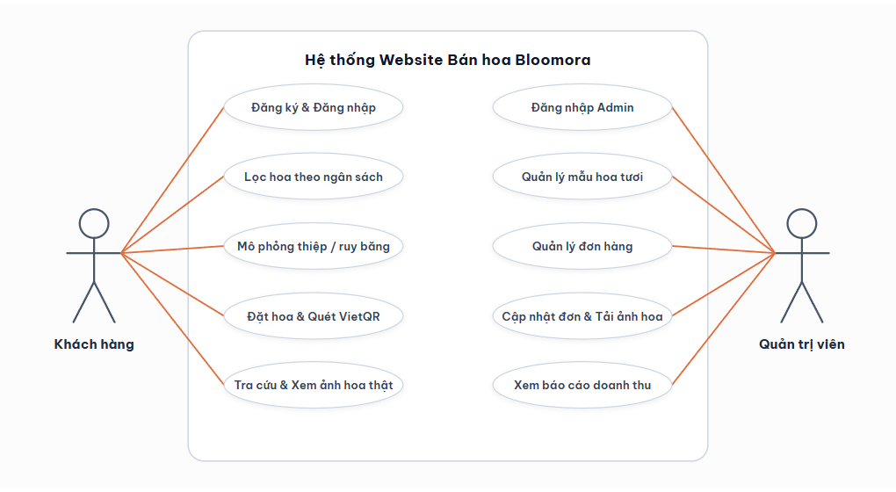

Bố cục chuẩn mực: Khách hàng bên trái, Hệ thống website ở giữa, Quản trị viên bên phải, đường liên kết màu cam.
Bao gồm 3 chức năng khách hàng (Tìm hoa, Đặt hoa, Tra cứu) và 3 chức năng quản trị (Sản phẩm, Đơn hàng, Doanh thu).

Tác nhân Khách hàng nằm bên trái, Quản trị viên nằm bên phải, và Khung biên giới hệ thống nằm chính giữa.
Mỗi bong bóng Use Case đại diện cho một nhóm User Story cụ thể ở Mục 2.4 (Tìm hoa, Đặt hoa & in thiệp, Tra cứu 5 bước, Quản trị đơn & báo cáo).
Chỉ cần nhấn nút "Sao chép ảnh vào Word" rồi vào file Báo Cáo Word ấn Ctrl + V là ảnh chất lượng cao sẽ hiển thị sắc nét.